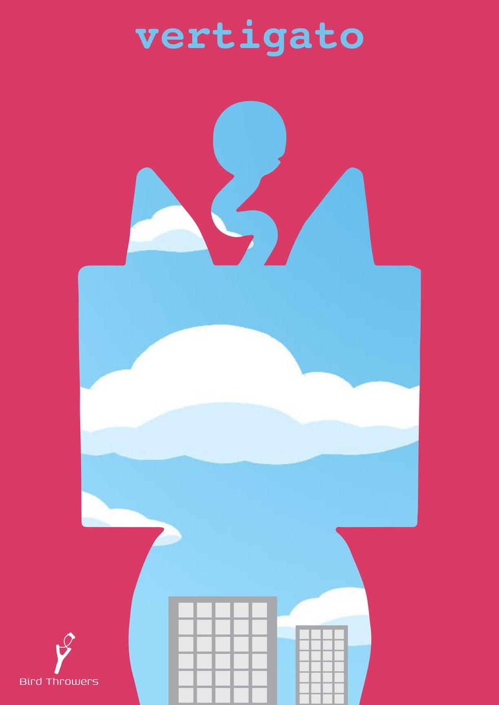
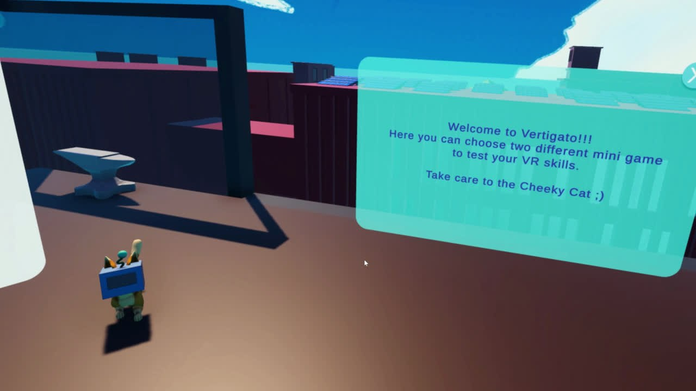
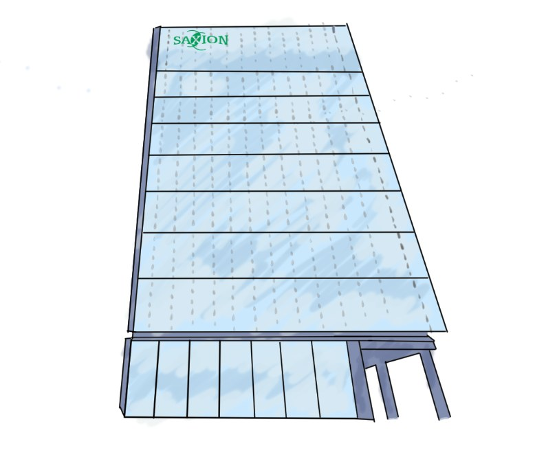
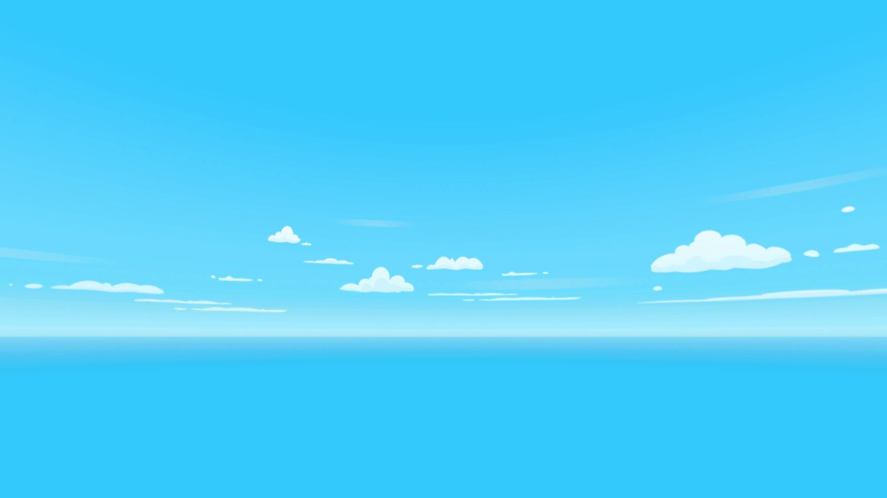
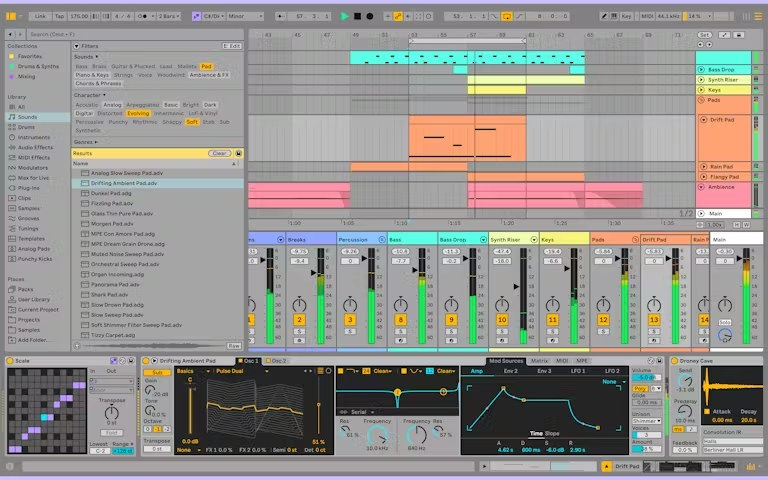
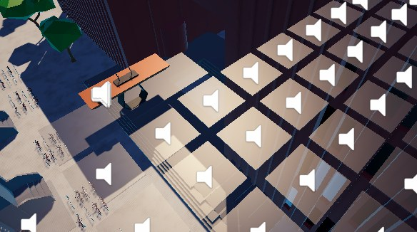
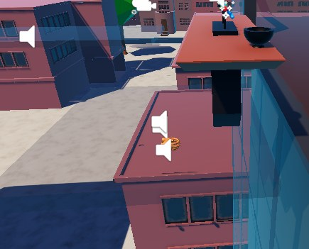
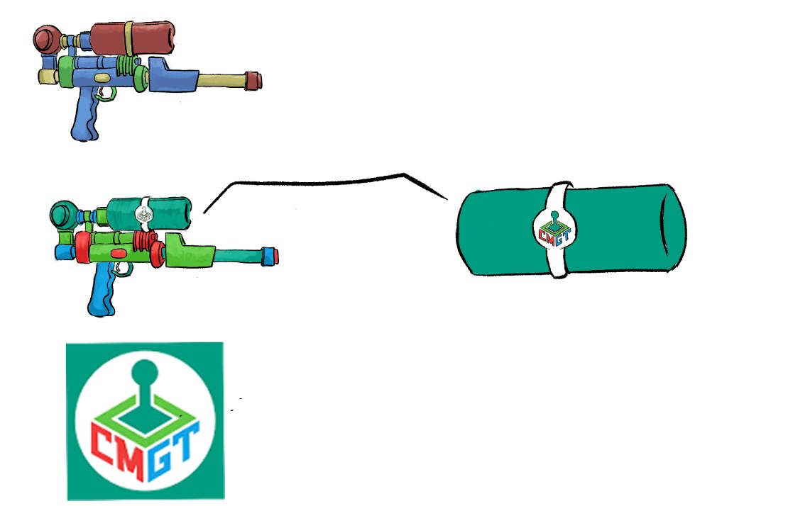

THE GAME
Vertigato is a VR experience built in Unity that plays on the fear of heights. The name is a mash-up of "vertigo" and the Spanish "gato", and the mascot is a cheeky cat. Players step onto rooftops high above a city and take on two short minigames designed to test their VR nerve: walking out across a glass panel without looking down, and defending a bird nest by shooting water at the cat that keeps trying to knock it off the ledge.
We made it as team Bird Throwers, seven people working across design, art, and engineering. It leans into "try not to fall": the height, the wobble, and the sound all push the player to second-guess every step.

MY ROLE
I worked as a designer with a wide remit. On the art side I drew concept art and the skybox, and implemented the skybox in Unity. On the audio side I owned the whole soundscape: I composed the original background music and the wind ambience, collected and edited the rest of the sound effects, and scripted the audio into the game. I also put together the team's presentation.
Worth being honest about the credits: nearly every sound effect in Vertigato was sourced and then edited, but the background music and the wind ambience are original pieces I wrote for the project.
CONCEPT ART & SKYBOX
Before any audio, I helped set the look. The concept art worked out how the rooftops and the surrounding buildings should sit around the player, and the skybox gives the world its bright, exposed, high-up feeling. Getting that sky right mattered for the fear-of-heights idea: an open, cloudy sky on every side makes the drop feel real once you look out.


MUSIC & SOUND
The original audio was written in Ableton Live. The background music sets the mood without crowding the moment-to-moment play, and the wind ambience is the constant reminder that you are somewhere high and exposed. For the rest of the soundscape I collected source material, edited it to fit, and scripted it into Unity so the right sound fires on the right action.

SOUND IN THE WORLD
Because this is VR, placement is everything. Players turn their heads and lean over edges, so sounds have to come from the right point in space to feel real. I placed audio emitters throughout the level, on the glass panels, the rooftops, and around the bird nest, so the soundscape stays anchored to the world as the player moves and looks around.


HOW I MADE IT
My path through the project, from the first sketches to the sound in the world:
- Drew concept art to work out how the rooftops and the surrounding buildings should sit around the player.
- Drew the skybox and implemented it in Unity to give the world its high, exposed feel.
- Composed the original background music and the wind ambience in Ableton Live.
- Collected and edited the rest of the sound effects to fit the scene.
- Scripted the audio into the game so the right sound fires on the right action.
- Placed audio emitters across the level, on the glass panels, the rooftops, and around the bird nest, so the soundscape stays anchored as the player moves and looks around.
